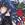

|

Kurosu
Author of 46 Stories |
A Bishoujo Senshi Sailor Moon & Ranma 1/2 Crossover
Wild Destiny
written by K-chan
Chapter Four: The One He Loves
Beneath the icy terrain of the Earth, a timeless entity slumbered. Even in its deep sleep, it could hear a voice calling it to awaken once more. A voice filled with hatred and jealousy that desired destruction on all who caused her suffering. It was the voice of a human-those fragile creatures who easily succumb to their emotions.But the time had not come yet. It had to wait until it had enough power, and then it would sweep the universe with untold destruction. The necessary energy was up to the one human that had once released it centuries ago.
Queen Beryl, who desired power and revenge, had given herself to the ultimate being known as Metallia. In order to resurrect her great leader, vast amounts of energy were needed, and for such a measly task, she had entrusted the mission to one of her generals yet it was proving otherwise.
Within a dreary, damp cavern deep within the Dark Kingdom, Beryl sat on her throne, leaning her weight against her elbow. She was contemplating on the unsuccessful attempts to gather energy. She closed her eyes, trying to recall the memories of long ago. Because of him-the one she loved-she had risked everything, creating a pact with the devil. She tightened her grip on the armchair as images of her precious love with another flooded her mind. Her eyes opened suddenly as she screamed, "CHALENITE!"
A man with short, green hair came forth from the darkness and knelt on the floor in reverence. He greeted her, "My Que-" Chalenite hunched over the floor in pain. His eyes filled with shock as he saw a green puddle oozing from him. He tried to push himself up but horrendous pain shot through his body. His hand slowly crept towards the open wound where the bleeding originated. He was right-it felt like a spear was thrusted through him and yanked out.
"I feel much better," Beryl said, holding her staff above Chalenite's body. The green blood dripped onto his fallen body. The desire for vengence had taken over her heart. She had to kill everyone who caused her suffering. No one would stand in her way, not even the two Sailor Senshi.
Beryl turned away from the young soldier's motionless body, laughing out the pain in her heart. The name 'Chalenite' was no more in the Dark Kingdom.
The next morning at the Tendou Dojo, Ranma and Genma were sparring in the yard when Kasumi came into the main room with breakfast. Akane helped her sister as she grumbled something about freeloaders in their home. "Ranma-kun! Saotome-san, breakfast is ready!" Kasumi announced.
"Aah, thank you, Kasumi!" Genma smiled, not worrying that he was still in mid-air with a hold on his son's leg. Unlike the old man, Ranma was panicking since the two were directly above the pond, and he was about to be dragged down into the water.
There was no chance avoiding that situation, so minutes later, Ranko sat outside the room, wringing her shirt of excess water. Soun happily strolled out to breakfast, expecting a nice meal with his family and soon-to-be in-laws. "Good morning, everyone!"
"G' mornin', Tendou-san," Ranko answered, being polite. Surprised at hearing a different voice that morning, Soun turned to Ranko, and his eyes suddenly bulged out at the topless girl. Quickly after that, he lost his balance and fell forward, landing face first onto the floor.
"You're UNBELIEVABLE!" Akane shouted as she threw a hot kettle at Ranko, who caught it with one hand and turned around to Akane and made a face at her. "You are SO immature!" she yelled at him, angrily.
"You should talk. You sound like a whiny brat."
"WHY YOU-!" Genma and Soun grabbed what they could of breakfast and hurried outside while Akane started a war in the room. Kasumi followed them outside with the tea tray and poured a cup for each man. "RANMA! YOU JERK!"
"Oh no, the tomboy's gonna hurt me," Ranma said, sarcastically.
"FORGET THE TABLE! I'LL KILL YOU WITH MY BARE HANDS!"
The trio outside the room were pretty much oblivious to the situation as they enjoyed their meal beneath the morning sky. The fighting was creating a lot of damage, which meant the middle Tendou daughter would not be happy about losing money.
Luckily for Ranma, Nabiki wasn't present at the house that morning. Instead, she was at the front campu of Furinkan high with Akane's fan club, offering valuable information to the lovesick boys. She couldn't quite understand why the whole male student body madly flocked to her little sister. She had to admit Akane was a nice, gentle girl when she wanted to be, but she was hardly that when beating up these guys. So what was it that attracted them to the ferocious tomboy of a sister?
It had to be one of the unsolved mysteries of Tokyo, Nabiki thought. She really shouldn't be worrying about petty details, not when she was making money off her own sister. Not in a terrible way, she reasoned. She noticed the young men, pushing and shoving towards the platform where she was standing. "Quiet down, boys," she said, smoothly. When Tendou Nabiki had something to say, it usually was profitable (to her) and dealt with Akane. On command, the boys behaved.
She grinned. "I know you all are eager to date my little sister, Akane, but there's something that you would probably like to know concerning her future." She paused, roaming her eyes through the silent crowd. The sight was very amusing. She should've taped this to reminisce on her high school days.
She mentally frowned when she realized her number one client wasn't even there. She didn't reveal the news the day before because she held some respect for him-actually just his money. Even if he was late now, she could wring the money out of him later.
Nabiki pretended to appear depressed, sighing, "Oh I really shouldn't be saying this... dear Akane should be the one, but in the end, everyone will know-no matter who said it." She turned to the crowd with a big smile, "NOW LET THE BIDDING BEGIN!" Soon, the front lawn was covered with chaos as Nabiki happily took-err, accepted the generous money given to her.
"NOT AGAAAAAAAAIN!" Usagi screamed as she raced out of her house. Morning was such a pain. Not only did she have to get up early, she wasn't doing well in school either, but that was totally OLD news. When she gave her graded test to her mother yesterday, the woman didn't take it too well from what Usagi heard from her brother.
She started to slow down as she felt the emptiness in her stomach. Why did she have to be late? She always forgot to grab breakfast and sometimes her lunch. She wondered if the life of Tsukino Usagi would ever change.
Usagi was heading towards the corner when she heard a girl's voice shouting about her tardiness as well. Seconds later, she found herself knocked back to the pavement. "Oh, I'm really sorry 'bout that!" said a voice. Usagi looked up and saw a girl with long, blonde hair extending a hand to her. She took it with a smile, understanding how the girl felt.
"It's okay," Usagi giggled, "I'm kinda late myself."
Minako rubbed the back of her head, nervously. She looked at the girl's school uniform and realized what school the stranger went to. "You go to Juuban Junior High, ne?" Usagi nodded as the girls started to walk down the street together. "Thought so, I have a friend who goes there."
"Really? What's her name? Maybe I even know her."
"Mizuno Ami."
"AMI-CHAN?"
Minako stopped and looked surprised. "Wow, what are the odds of two strangers bumping into each other and knowing the same person?" she laughed.
"Yeah," Usagi said, joining in the laughter. "I forgot to introduce myself. My name's Tsukino Usagi, second year."
"I'm Aino Minako, second year as well." The girls were just getting acquainted when the bell of the nearby school rang, indicating the new hour. The girls panicked and hurried down the street. Halfway down the street, Minako had to part from Usagi towards her own school. "Tell Ami-chan I said 'hi!'" Minako called out. "See ya around, Usagi!"
"See ya, Minako!" Usagi waved. Somehow she felt at ease, maybe just knowing there was someone as late as her existed, but then the dreadful feeling of seeing Haruna-sensei's angry face trickled down her body. She had to think of another excuse or build enough courage to run past the school and take a one-day vacation. Either way, she would face trouble, but she might as well take the lesser punishment of detention.
Usagi sighed inwardly and continued for school.
"I wonder what Nabiki's up to?" Akane asked quietly as she finished putting on her shoes. She looked over her shoulders and frowned at a wounded, slow-paced Ranma. "Hurry up! Or we'll be late again!" she yelled. She grabbed the door knob in anger.
Ranma glared at her, grabbing his school bag and mumbling something about he not fighting girls. Akane stopped and was about to turn around and smack him, but Kasumi appeared with a smile, "Ne, Akane-chan."
"Eh, what is it, Kasumi?"
"Could you stop by Tofu-sensei's place?" she asked, holding a book out to Akane. "I borrowed this book from him, and I would like you to return it."
Akane paled slightly, feeling jittery. Ranma noticed, wondering why she was worked up with just returning a book. "Umm, could you uhh... do it yourself, Kasumi? Today... isn't good for me."
"Today isn't good, huh?" Ranma repeated, thoughtfully. He leaned against the wall with his arms folded behind his head. "Is that fan club of yours meetin' or somethin'?" Akane swung her school bag through the air, aiming for his head, but he ducked in time, letting the object strike the wall. "I don't get what those idiots see in you anyway." He stuck his tongue out at her and then avoided another attack before dashing out the door.
"RANMAAAAAAAAA!" the short-tempered girl screamed, running after him.
Nabiki smiled as she safely placed all the money into a metal box and locked it. She turned towards her clients, increasing the tension. After seconds of silence, she pointed her index finger into the air, shouting, "AKANE HAS A FIANCE!"
"FIANCE?" repeated the male crowd.
"WHAT?" yelled a new voice, "WHEN? HOW COULD THIS HAPPEN?" After shoving his way to the platform, Kunou confronted Nabiki, demanding an explanation. "Tendou Nabiki! Explain thy self!"
Nabiki folded her arms across her chest, looking seriously at her classmate. "Kunou-chan, you know me better than that." Immediately after her little statement, Kunou handed her some money-actually all the money he had for that day. She flipped through the bills in a second and was satisfied. "Sold." She leaned down from her height towards an eager Kunou and said, "That's right. Akane has a fiance now. My dad and his dad decided. Akane's going to marry Saotome Ranma."
"SAOTOME RANMA," he seethed. "SAO... TOME... RAN... MA..." His anger erupted from him as hateful words (and wasted breath) exploded into the air.
Not too far away, Ranma suddenly sneezed, wondering if someone was talking about him. He and Akane were getting closer to the high school while Akane was walking ahead of him, quietly thinking of Kasumi's request. She did want to stop by, but what was the point when nothing was going to change. She sighed.
Ranma noticed and turned to her. "Who's this Tofu guy?" he asked curiously.
She turned her nose into the air, "If you must know, Tofu-sensei is the chiropractor in our neighborhood. He's a wonderful person and a great martial artist too!" She smiled, just thinking about him and recalling her childhood days.
"Oh. Seems to me you really like this guy," he said with a bored expression. "But I thought you hated ALL men."
Akane snapped out of her memories with her left eye twitching. She did hate all men except for two of them: her father and Tofu-sensei. She was about to say something when she heard her name being called. "AKANE-KUN!"
Nabiki picked up her things and began to move to the side as another battle started. She glanced over her shoulder at Kunou who appeared to be in his own world. The crowd was moving towards the school gate to cut off Akane and her fiance. "Akane-kun's with Saotome! Let's get HIM!"
"SAOTOME?" Kunou repeated, slowly turning around. His battle aura was glowing, making him look more like a demon than a human. "SAOTOME! I WILL RELEASE AKANE-KUN FROM YOUR BONDS! he shouted, not caring that he had no idea who Saotome Ranma was. He charged after the crowd with his bokken in his hands and swung it to clear a pathway to his victim.
Ranma looked ahead, surprised to hear his name being called with such ferocity and dislike. "WE'LL DEFEAT YOU, SAOTOME, AND AKANE-KUN WILL BE FREE TO DATE!"
Akane prepared to defend herself, warning Ranma, "This is my fight."
"Oh really? Then why would they be speaking to ME?" He took off his school bag and threw it to a surprised and upset Akane. "This's gonna be a piece of cake," he said, cracking his knuckles. He noticed the students were suddenly flying to the right and left. In the clear path stood one brave-but idiotic-young man.
"Saotome Ranma," Kunou said, pointing his bokken at Ranma. "I'LL NEVER ACCEPT YOUR ENGAGEMENT TO AKANE-KUN! NEVER!" He charged at Ranma who seemed upset. Akane wasn't thrilled either since the chaos started because of her unwanted engagement to Ranma. How could they have known if she didn't tell them. Maybe Ranma did... the STUPID JERK!
Ranma stepped aside, letting the bokken, and Kunou slip by his head. "I could care less about that stupid engagement!" Kunou attacked again, but Ranma's foot went upwards into the air and stopped his opponent's hands, holding it still. "Ya know, you shouldn't be playing with swords."
"FIEND, YOU DARE MOCK KUNOU TATEWAKI! BLUE THUNDER OF FURINKAN HIGH!" He retreated and then launched a set of thrusts at the pigtailed-boy.
"You're that Kunou guy, huh?"
Akane watched in amazement at Ranma's speed avoiding all of Kunou's attacks. Nabiki was still at the scene and quite impressed with Ranma as well. Just watching the two fight, an idea formed in her head that, of course, involved money.
Ranma flipped backwards, evading Kunou's persistent attacks. When Ranma stopped in front of a tree, Kunou paused for a second and pulling all his strength together, thrusted the sword at Ranma. Ranma leapt into the air and planted his feet briefly on the tree's trunk before flipping over Kunou. The bokken pierced into the trunk and was stuck there. Ranma landed a few meters away from Kunou, who tried to pull his weapon out. "Need some help there, Kunou?"
Still struggling, he angrily replied, "That will be Kunou-SENPAI to you!"
Nabiki walked over to the scene. "Hi, Ranma."
"Nabiki."
"You've got some moves there." She went over to Kunou and leaned against the undamaged side of the tree. "Mornings aren't really a good time for a skirmish, but we could continue this after school. The winner gets to go out with Akane. What do you think, Kunou-chan?"
The idea suddenly occurred to Kunou, who ceased his efforts of getting his bokken unstuck. Ranma and Akane were about to refuse the prize for winning, but Kunou faced Ranma with a foolish, arrogant laughter, "Your suggestion, Tendou Nabiki, pleases me." He glared at Ranma, "Saotome, if you are a man, then we shall continue this after school." He started to walk away, laughing to himself. "Haha, I am too kind to allow you to live longer. Ha-ha!"
"TOO KIND? LETTING ME LIVE LONGER?" Ranma said angrily. "Don't worry, Kunou!" he shouted to his opponent, "Just make sure you bring your blockhead self here!"
Nabiki smiled, clasping her hands together happily. "What a day!" She turned towards the crowd of male students who were supposed to beat up Ranma and said, "Well, boys?" They suddenly flocked to her to place bets on that afternoon match.
An appalled Ranma and a furious Akane stood by and watched. "Umm, does she do this all the time?" he inquired.
She nodded. "You better be careful though, Kunou shouldn't be taken lightly."
"It's a man-to-man fight, so I ain't doin' this for you."
She turned away from him, frowning. "GOOD!" Ranma watched her stomp off to class. He didn't understand why she always treated him like a despicable person. Kasumi and Nabiki were nice to him. He could count on Usagi to be there and listen. Akane really had some issues.
Later that morning at Juuban Junior High, Ami was diligently studying at her desk while the rest of the school were taking a break. Since the incident with Sailor Venus the other day, she wanted to catch up on the missed hours. If she was to become Sailor Mercury and fight in the near future again, then her studying would have to pick up quickly-meaning every chance she had, she would study.
Usagi poked her head into the classroom and looked around until she spotted Ami. "Ami-chan!" she chirped and made her way to her friend.
Ami smiled, seeing the blonde's cheerful face, and closed up the book she was reading. "Hi, Usagi. What brings you here?" Usagi pulled a chair next to Ami's desk and sat there.
"I just came to see how you were doing." She tucked her hands underneath her chin and perched her elbows onto Ami's desk, leaning towards the stack of books. "Ami-chan! You're gonna read all THOSE books?"
She blushed. "Well, I only have one more after this one," she said, indicating the book she just closed.
"Wow, you're SO smart!" Usagi praised, admiring the shy girl. "Oh yeah," she remembered, "I ran into your friend, Minako, this morning. We were both late to school!" She giggled, recalling their encounter that morning.
"Oh I see," she giggled. "I met her yesterday at the computer school."
Usagi's face wrinkled up, trying to recall where she had heard about a computer school. "I'm sure I've heard something about that..." Ami was about to explain, but students in the room were already talking about the incident at the Crystal Seminar building. The two girls listened as the discussion led to the reappearance of Sailor V and the new Sailor Senshi. "Sailor Venus AND Sailor Mercury!"
Ami wasn't sure what was going on, but from her short meeting with Minako after the fight, it seemed whoever was behind the attacks were after energy-great amounts of it too. Besides that, Minako had mentioned about their allies they had to find. There were more people out there just like her who were destined to fight for peace.
Fighting-was it the best solution to peace? Ami knew there wasn't another choice with the beings they were up against, but still, the thought of fighting as the only choice troubled her. "Usagi," she started.
The girl looked at her and noticed her eyes were a bit sad. "What is it, Ami-chan? Is something wrong?"
"What..." Ami tried to smile to lighten up the seriousness of her question, "This is silly to you, but... what do you think about fighting as the only solution for peace?"
Usagi smiled, her eyes filled with warmth. "Was that what was bothering you?" She sat back against the chair, putting her hands in her lap, and let her eyes wander towards the scenery outside the windows. "I'm weak and a coward, and I'll get hurt, so I don't like fighting. But if people that I really care about were hurt, then I'll fight. I'll fight to protect them."
Ami let out an unnoticeable gasp as she listened to Usagi's words. The expression on her face, the tone of her voice, they were gentle and genuine, holding no hesitation nor doubt. "Usagi-chan," she whispered.
That afternoon came soon enough as crowds began to gather near the gym, where Nabiki was present, taking last minute bets. After seeing Ranma display some skills that morning, the bets were almost even, but Kunou still took the lead. As for her, she was leaning more with the crowd's vote but a feeling told her not to invest so much into Kunou. This was Kunou after all.
Kunou stood in the field, waiting for Ranma to show up. He was about to curse the pigtailed-boy when Ranma ran into view with a pissed off Akane after him. "That foul being! Upseting dear Akane-kun." As Ranma came closer, Kunou hoisted the bokken into the air. "SAOTOME! I WILL PUNISH THEE!" He charged at Ranma, who quickly turned his attention to the kendou practitioner.
Nabiki announced, "LET THE BATTLE FOR AKANE BEGIN!" Akane heard her sister and ran to her, upset at what she had done. "Oh Akane, I know you'll like this. I mean, not many girls are as lucky as you-with two guys wanting to publicly display their affections for you."
"You call battling it out showing affections?"
"We all have different views."
"Well, yours are usually clouded by money, Nabiki."
"Like I said, we have different views." Nabiki turned her attention towards the young men as Akane groaned out of weariness for even bothering with her sister. Nabiki rarely expressed her true feelings, so most people including Akane would see her as a selfish, deceitful person. It didn't bother her of what other people thought, but having a kin think of you that way really hurts. Nabiki quietly glanced at her little sister, hoping some day the girl would understand her motives.
Ranma stood meters away from a charging Kunou. "Yo Kunou, sorry 'bout bein' late." He bent his neck side to side as the bokken was thrusted at his head. He jumped into the air as one swing of the bokken swooped by, cutting a tree that was ten meters away.
Everyone was amazed at the sight. "Woah! Look at Kunou go!"
"Saotome's gonna get it now!"
"Just the air pressure..." Nabiki was very impressed with Kunou. He hadn't connected with a single hit yet. Either Ranma was really good, or he was just good at dodging, Nabiki thought.
Akane shouted at Ranma, "IDIOT, I TOLD YOU NOT TO TAKE HIM LIGHTLY!" To her, Ranma was stupid. Did he want to get killed? She knew Kunou was good and with him angry, he could tear Ranma apart. No matter how much of a jerk he was, she didn't want him to get hurt because of her. But he said he wasn't fighting for her, so why should she even care? She didn't want Ranma to lose though. There was no way she was going to date Kunou. No way.
Ranma was really tired of Akane yelling at him. Even if she was just showing a little bit of concern, she should at least be nicer about it. He shouted back, "JUST STAY OUT OF THIS!" He felt the strong pressure of the swing beneath him as he intuitively grabbed the end of the bokken and smashed his feet against Kunou's chest. Kunou felt the connection, knocking him back, while the crowds gasped.
"Kunou was hit!"
Ranma nimbly landed on his feet, flicking his pigtail from his smirking face. "How was that, Kunou-SENPAI," he said tauntingly.
Kunou recovered but stood with his head looking towards the ground and his weapon by his side. "Saotome Ranma... you..." He grabbed the bokken with both hands and ran right for Ranma. "YOU DARE MOCK ME!" Ranma sighed, seeing the beginning of the same attacks again, but was soon taken back when a series of multiple strikes suddenly appeared at him, followed by Kunou's furious voice of numerous 'strike's.' Caught off guard, Ranma barely avoided the assault.
"THE BATTLE ENDS NOW!" Kunou was coming in for the final hit when Ranma noticed openings after every swing. He had to be quick to get a kick in before Kunou could strike again. Time seemed to slow down as the bokken thrusted at Ranma but missed him, giving him the opportunity to kick Kunou hard on the chest. Kunou was momentarily shocked, letting Ranma send more kicks up and down his chest and even his face.
Ranma flipped away as Kunou started to wobble and eventually fell down. Everyone stood on their feet, realizing they had witnessed the defeat of Kunou Tatewaki, the Blue Thunder of Furinkan High. Nabiki and Akane walked up to the scene. "Ho-How did you do that?" Nabiki asked as Akane checked on Kunou.
"Oh. Each blow hit a vulnerable spot," Akane answered her sister.
"You kicked him?" Nabiki questioned, amazed at Ranma's talent. "I never saw that coming."
Ranma grinned. "Kunou-senpai was nothin'," he said, cracking his neck after the short challenge. Now that that was over, he was pretty hungry. He should be heading back just in time for Usagi to come. He was looking forward to see her again since a so-called tomboy he knows seemed to find every opportunity to clobber him. It didn't take a genius to decide which girl he'd rather be with.
"You didn't get hurt, did you, Ranma? Akane asked, rhetorically, not seeing a single injury on his body. She had to ask just to make sure no one would blame her for injuries she didn't cause. And after all, Ranma was a guest in her house, and it was because of her that the fight started, so she had some responsiblity if anything happened.
"Of course not." He started to walk away when a group of girls ran towards Ranma and pushed him to Akane. "Hey! What's goin' on?"
"You really ARE Akane-chan's fiance!"
"Akane-chan, you're SO lucky!"
Ranma backed away and then angrily told them, "The engagement WASN'T my idea! I didn't want a rude, violent, uncute fiancee like HER! IF I HAD A CHOI-" He realized his mistake too late when he saw Akane's dreadful face-a face that would forever be etched in Ranma's mind.
The afternoon looked lovely despite the painful sounds of bones cracking in the background. For the hero of the story, Ranma's school day ended with a victory over an upperclassman bully but... a total defeat by his ferocious fiancee. Just like her demonic face, it was a day he would never forget, and it wasn't over yet.
Somewhere else in Tokyo, Minako was just arriving at her house from volleyball practice. "I'm home!" she announced as she slipped her shoes off. She heard her mother call out to her from the living room, telling her to come. Minako peeked into the room and saw her mother unpacking something. "What is it, mom?"
The woman smiled, holding up a clock of two white kittens. "Isn't it lovely, Minako-chan?"
"Sure," she said, coming and sitting down beside her mother. "Did you buy it, mom?" Her mother eyed her gravely as Minako looked at the clock carefully.
"Yes. The store was having a huge discount." She looked at her daughter. "And I bought it just for you, dear," her tone was becoming strict, "so you would get up in time for school."
"Oh mom!" she groaned, but also hoping it would help. She knew better than to argue with her mother though, recalling the numerous times the lady had reacted to her tardiness and grades. "Okay, I'll put it directly by my bed."
"That's my good girl." She stared at the clock again, musing, "I hope Artemis or Luna won't get jealous." Minako smiled, wondering what the two were doing since she parted with them that morning. She brought her new gift up to her bedroom and set it temporarily at her desk. She sat there, looking at it with boredom. The moment was soon disrupted by Artemis's return. Minako looked up and asked, "Where's Luna?"
Artemis caught sight of the clock and jumped on the table for a closer look. "She's with Ami. What's this?" he asked, seeking a more insightful answer than a clock.
Minako snickered, mistaking his curiosity for another emotion, "There's no need to be jealous, Artemis. You'll always be my favorite." She took the clock and set her morning alarm. She scrunched her nose, deciding to set it a few minutes later so she could get some more sleep.
"It's nothing like that!" he said, frowning at his companion's lack of perception. "There's something different about it."
"You're being paranoid over a CLOCK."
"Well I don't like that thing. Look at their eyes." The cats' eyes appeared to be staring at him as he looked at it. He shivered from an ominous feeling.
"Tofu-sensei!" Akane called as she dragged an injured Ranma into the local clinic. She took the boy into a room and put him on one of the beds and waited for the doctor to come. Ranma seemed to be in shock from the pain running through his body that was caused by Akane after the fight with Kunou. Akane looked away from him, thinking how he deserved it for humiliating her in front of the whole school.
A man entered the room, drying his hands with a towel. He saw the girl standing by the bed, "Oh, hello there, Akane."
Akane began to feel flustered as he came near. "He-Hello-o, To-Tofu-sensei. Here's a patient for you." She indicated Ranma's terrible state.
Tofu pulled up a stool and looked at Ranma from a general view. "This... is quite amazing." He began to examine Ranma up close, "These dislocations and contusions... They're brutal!" Akane blushed with embarrassment. "What kind of thug did this?" he asked her. Her face was still red as she stared at the floor. Tofu turned his attention back to Ranma, who was trying to say something.
"A... A... dorky girl..." Ranma fell off the bed before he could finish his sentence. Akane had lifted one end of the bed up, causing Ranma to painfully crash to the ground.
"Say that ONE more time, Ranma, and I'll-"
Tofu pushed the bed down and looked at the upset girl, "Akane, you did this?"
"Umm... well... that is..." She didn't want him to think she wasn't ladylike at all, but Ranma on the other hand was very annoyed with her behavior. He didn't like the sweet, innocent act she was putting on. If she thought being like that could make up for her violent acts, she was wrong. Ranma realized there was something more. All the little things came together-from the morning when Kasumi mentioned about Tofu and now the innocent bit. She liked this man, even if it appeared to be a silly crush.
"Well, I had a feeling it was!" Tofu laughed. He picked up Ranma from the floor and laid him back on the bed. Just as he was about to get Ranma back to normal, the telephone rang. "Could you answer that for me, Akane?"
"Yes, sensei." Akane walked out of the room and into the hall to answer the phone. "Hello? Can I help you?" She recognized the voice on the other end but was slightly bothered by Ranma's shouts of pain in the background. "Yes," she said to the caller, "I see. Okay. Bye." She hung up the phone and sighed.
After she made a phone call to be sure everything was fine, Kasumi began to pack her homemade cookies into a basket. She took the book she had planned to have Akane returned to Tofu and the basket and headed out the door. When she stepped out into the front yard, Usagi had just arrived. "Usagi-chan, welcome!"
"Hi, Kasumi-san. Is Ranma here?" Her eyes wandered around while her ears tried to pick up any sounds that were his or anything in relation to his whereabouts.
"I'm sorry. Ranma and Akane aren't home yet."
Nabiki walked through the gates, declaring, "I'm sure they're at Tofu's place. Akane really gave it to him this time." She then disappeared into the house.
"Oh my," Kasumi said, not quite sure what to think about Nabiki's words. She turned to a bewildered Usagi, "I'm sure Ranma's fine. I'm just about to visit Tofu-sensei. Why don't you join me, Usagi-chan?" The blonde girl didn't know what Nabiki meant, but she did want to see Ranma so she nodded.
"KASUMIIIIIIIIIIIIII!" Soun cried as he and the panda ran out into the yard. They were both panicking over the fact that each of their hands were stuck in a cookie jar and couldn't get them out. They had turned to Nabiki when she came home, but the girl had demanded a price they couldn't afford at the moment. But Kasumi could be dependable in any situation.
"Oh dear." Kasumi looked at the problem and then said to Usagi, "I guess I won't be able to go. Could you deliver these to Tofu-sensei, Usagi-chan?" Usagi nodded and accepted the book and basket from her while pitiful tears were streaming from Soun's and the panda's eyes.
"THAT HURTS, YOU KNOW!" Ranma informed Tofu of his strange treatment. Akane returned to the room after the phone call ended, looking downcast.
"Really? I have some ointments that'll help." Tofu stood up, "Be back in a second." Then Ranma realized all his bones were in order again, but all the adjustments did give him a bit of an ache.
"I'm going home," Akane announced as she hurried to the door.
"What's the hurry?" he asked as he dashed after her.
"It's nothing."
"Oh, and I thought you liked To-"
Akane's hand muffled Ranma's last word, surprising him. "Shut up!" Her eyes glared at him with a strict warning. "If you know how I feel, then don't say anything. There's already a girl he likes." She pulled her hand away from Ranma as she continued, "That was her on the phone... She's coming right over."
"I didn't think there was any man on earth that could make you like men," he remarked thoughtfully. Akane was about to smack him when a familiar voice rang in their ears.
"Hello?"
Akane noticed Ranma's shocked expression first before turning to the guest. Ranma couldn't believe the girl Tofu liked was someone he knew. "No way! It can't be," he tried to convince himself, "It can't be..."
Akane turned around and saw Usagi standing there with a puzzled expression. She hit Ranma on the back of his head, "Idiot! It's NOT Usagi!" He blinked at her, not certain why he was very relieved to hear those words. Akane asked Usagi, "Ne Usagi-chan, why are you here?"
She smiled, "Nabiki-san said you two were here so I came to see if everything was okay. Plus Kasumi-san told me to give Tofu-sensei these." She showed them the book and the basket of treats.
"Please come in," Akane said, gesturing into the room. "I'll make some tea and get the doctor."
Usagi nodded and followed her with Ranma. She glanced at him and saw that he was all right. She whispered to him, "Ne Ran-chan, Nabiki-san said you were hurt bad. By Akane-san too. Was it true?"
He laughed, "Yeah right! Like that macho girl can lay a painful one on me! HA-HA!" Suddenly his head was struck by a wash pan. Ranma was just recovering when Tofu returned, wondering what the commotion was.
Tofu realized there was a guest and adjusted his glasses, taking a good look at her face and hairstyle. Akane spoke up on Usagi's behalf, "This is our friend, Usagi. Kasumi sent her over here to return your book."
"Usagi is it?" he asked. "Tsukino Usagi?"
The three kids blinked. Usagi hadn't met him before, but he knew her family name. "I... don't think we've met... have we?"
Tofu chuckled, "I'm not surprised. You were quite young when I last saw you. I'm Ono Tofu, a cousin of your mother's."
Usagi smiled as she ran to him and gave him a hug. "Mom did mention about you! I'm so sorry I didn't come to visit you more often!" He laughed, returning the hug. The news really struck Ranma and Akane, who didn't know what to do but stood there instead. Akane felt a twinge of envy as she saw Tofu holding Usagi. She wanted to be the one giving and receiving a close embrace like that even if she knew she didn't mean much to him.
Ranma didn't know what to think since he wasn't familiar with Tofu, but he didn't like the embrace Usagi was giving him. He didn't understand why he would think about it, but he knew Usagi's hugs would make anyone feel great.
He only knew Usagi for a few days, but in those days, he could feel relaxed. Even if he playfully insulted her, she knew his words were only teases-unlike Akane, who took everything so seriously. She was one hard girl to please, but he wasn't trying to please her. He at least tried to loosen her up to guys and tried to be friends.
Soon the four sat down and had some tea Tofu made after Akane had made a mess the first time. Usagi tried to catch Tofu up on the lives of the Tsukinos. Akane listened to Usagi as she realized how open and sweet Usagi was. The girl could talk about anything while keeping that wonderful smile of hers. Akane wished she could be someone like Usagi, but knowing Usagi was enough, she guessed. "And you don't have a boyfriend yet?" Tofu asked, surprised. Usagi blushed, shaking her head. "I don't believe it. A girl as pretty and sweet like you."
Ranma piped in, "Yeah, unlike some other girl here." Akane out of the blue swung her stool at Ranma, but he had sensed it and leapt out of danger. Usagi giggled as Akane blushed, putting the stool down again. "Why do ya hafta be so violent?" he said to Akane. "Why can't ya be as sweet as Usagi?"
Usagi blushed further but then decided to teased the boy, "Akane-san is just showing how much she cares."
Akane tried to defend herself, "I don't care about him! It's all our parents' fault for this stupid engagement!"
"What she said," Ranma added.
"Well, it's still too early," Tofu said, "You're still children after all." Usagi nodded, agreeing with him. Akane turned away slightly, sighing quietly. She was still a child to him. She should just get over it all.
The evening was just beginning as Ranma and the girls were about to depart for home from Tofu's place. Usagi and Akane were walking ahead of the other two when Tofu said, "Just a moment, Ranma." The girls glanced over their shoulders and then decided to wait for Ranma at the entrance gates. "Fiance or not, please try to get along with Akane."
Ranma looked away, knowing well he was trying to stick up for Akane. "It's not like I start the fights or anything. She just overreacts to every little thing!"
The girls were too far away to hear anything, but Akane had a feeling they were talking about her. The way Ranma was frowning, she knew it had to be her. She didn't care what Ranma thought, but she didn't want Tofu to think of her in any bad way. "Usagi, I'll head home first. Ranma can take you home," she said as she walked away. "I'll see you later."
"Akane-san..." Usagi felt something was bothering her but didn't want to ask since Akane didn't look like she wanted to talk about it. She looked back at Ranma and Tofu, wondering what they could be talking about.
"You'll understand soon enough," Tofu said as he patted Ranma's lower back. "Akane's a really sweet girl."
Ranma met up with Usagi outside the gates and asked, "Where's Akane?"
"She wanted to get home." She walked quietly next to him. "Did something happen today, Ranma? I mean, Akane looks sad." She stopped, confronting him, "You didn't make her sad, did you?"
Ranma was about to defend himself, even if he wasn't good with words. "I didn't do anything! She's the one who always has to get violent!"
Usagi giggled, "Well you need to learn to know when to speak and when not to."
He started to walk again, crossing his arms behind his head. "I can't help it if I speak the truth."
"You still have to consider other people's feelings," she said. "Anyway what did you and Tofu-sensei talk about?"
"Oh, pretty much what you tried to convince me of Akane. She bein' sweet and all."
Usagi pulled on his pigtail, causing him to jerk back, "Well, she is."
He folded his arms across his chest, "I did give her many chances today, but you saw how she was."
"Not all girls are the same. You'll just have to try harder. After all, you two are engaged." It always ended up with the engagement, Ranma thought. He hated his father for setting it up. If the engagement never existed, then he could be with other girls. He stared at Usagi, thinking he could even date her. Ranma was about to say something when he felt the lower half of his body becoming numb. His legs wobbled and then collasped to the ground. "Ranma! What's wrong?"
"My legs!" He recalled Tofu patting his back, which must have done something to his legs. Usagi looked around and found a bucket of water. She poured it over Ranma, letting him become a girl. "Whaaa-?"
"Sorry about that, Ran-chan. I can't carry you if you were a guy." Usagi knelt down in front of Ranko, allowing her to get on her back. "You can't walk, so I'll give you a piggyback ride." Ranko didn't say anything nor refused. She held her arms around Usagi's neck as the blonde girl carried her home.
Somehow Ranko was glad Usagi had come and stayed instead of Akane. She couldn't even imagine what Akane would've done. It was best not to even bother about it. She glanced at the back of Usagi's blonde head, thinking how it would be better if she was engaged to her instead.
TO BE CONTINUED... Next Chapter, "A Girl's Dilemma!"
Here, I thank my prereaders-Bambi-chan (or B-chan), Jose-kun, and Raf-san-for all their work, help, and patience! And a really big thanks to all my readers too!
Nothing's been changed or added since this was last up-I just reuploaded whatever I had into HTML format, which is more pleasing to the eyes. After long months of not working on this story, I'm returning to it now... heh, ever since I finally got that second chapter out for Suzaku no Princess ! Since I'm on a roll here, I might as well work on this, ne? Heh heh...
K-chan =6_6=

|
Review this Chapter |